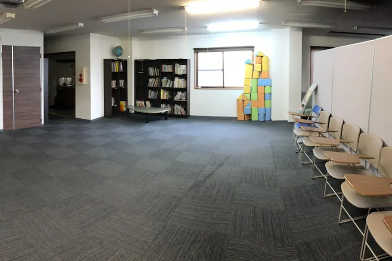
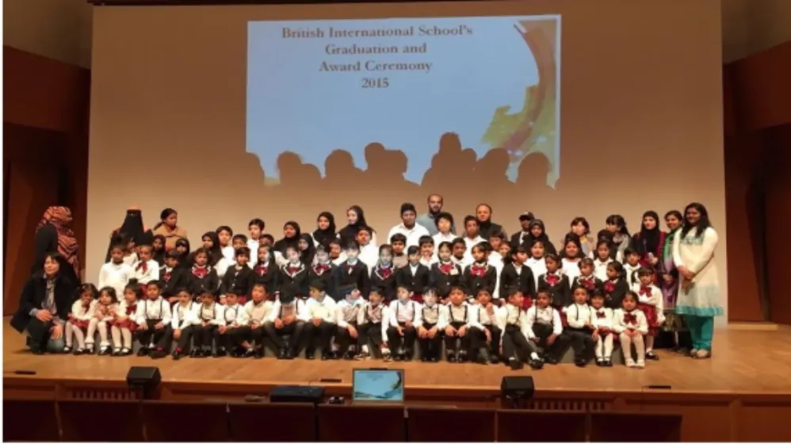

2007年設立の歩みと教育理念
当校について
海老名・綾瀬・大和の地に根ざし、子どもたちが世界へ自信を持って羽ばたける国際教育を提供し続けています。
- 2007年設立神奈川県海老名市で創立しました
- 8つの教育目標国際水準の学びと、確かな母国語の習得を両立します
- 年4回の避難訓練地震・火災を想定し、防災備蓄品も校舎に常備しています
設立の背景と沿革
創立の想いと、これまでの歩み
『国際水準の英語教育を提供しながら、日本の公立学校と同水準の母国語教育・道徳観・責任感を育み、地域社会と世界をつなぐ人材を育成すること。』
-
神奈川県海老名市に、BIS Japan（ブリティッシュ・インターナショナル・スクール）を設立。
-
児童・生徒の増加に伴い、綾瀬市・海老名市エリアに専用校舎を取得・移転。
-
ケンブリッジ国際カリキュラム認定校として、3歳の幼児部から小学部・中等部・高等部（Pre-IGCSE〜A-Level）までの一貫教育を実施。
校章に刻まれたモットー
- STRIVEたゆまぬ努力
- BELIEVE自らの可能性と仲間を信じる心
- ACHIEVE確かな目標達成
このモットーのもと、国際感覚と、日本の礼儀作法・感謝の心（挨拶・靴揃え・お片付け）をあわせ持つ、豊かな人間性を育んでいます。
ごあいさつ
校長からのメッセージ
教育目標
BISの教育を支える、8つの柱
- 国際水準の探究教育International Education
- 確かな学力と探究心Academic Quality
- 教育の公平性と機会提供Equity in Education
- 母国語（日本語）の完全習得Proficiency in Japanese
- 通いやすい良心的な学費Affordable Tuition
- 日本と国際社会への貢献Contribution to Society
- 多様性と異文化の尊重Cultural Respect
- 誠実さと責任感の育成Sense of Responsibility
キャンパス環境・学習設備
緑豊かで落ち着いた、学びの環境
海老名市本郷の、緑豊かで落ち着いた環境。充実した図書室、安全なプレイホール、多目的アクティビティスペースを備えています。
-

スクール図書室・読書ホール
英語と日本語の児童書・図鑑・洋書テキストを、豊富にそろえています。
-
幼児部プレイ＆アクティビティホール
木製のハウスやクラフトデスクを備えた、温かな創造の空間です。
-

年間表彰式・アニュアルセレモニー
日々の探究と努力（Strive・Believe・Achieve）をたたえる式典です。
安全・防犯・衛生管理体制
お子様を安心してお預けいただくために
日々の安全管理を、徹底しています。
-
防犯・入退館管理
オートロックのセキュリティと防犯カメラを設置。ご来校の方には、名札の着用をお願いしています。
-
防災・避難訓練
年4回、地震・火災を想定した避難訓練を実施。校舎内に、防災備蓄品と飲料水を常備しています。
-
アレルギー・健康管理
入学時に、お子様のアレルギー歴を個別にうかがいます。専任のスタッフが、配慮が必要な点に対応します。
-
スクールバスの運行管理
全車両にドライブレコーダーと運行管理システムを搭載。専任の添乗員が同乗し、乗り降りを見守ります。
見学のご案内
まずは学校の雰囲気をご覧ください
無料の体験レッスンで、先生や教室の雰囲気を感じてください。無理な勧誘は一切ありません。